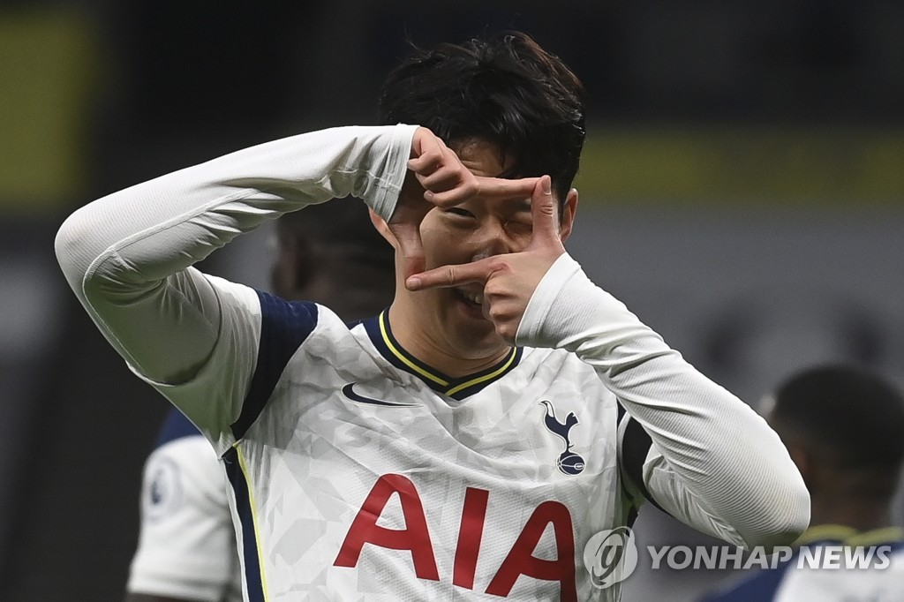

손흥민 H M SON 7 (1992년 7월 8일 (28세) 강원도 휘장 강원도 춘천시 CI 춘천시 후평동)

토트넘 홋스퍼 FC (2015~)
EFL컵 준우승: 2020-21
UEFA 챔피언스 리그 준우승: 2018-19
대한민국 축구 국가대표팀 (2010~)
AFC 아시안컵 준우승 : 2015
대한민국 U-17 축구 국가대표팀
AFC U-16 축구 선수권 대회 준우승: 2008
대한민국 U-23 축구 국가대표팀
아시안 게임 금메달: 2018

발롱도르 후보: 2019 (22위)
FIFA FIFPro 월드 XI 후보: 2019 (FW 14위), 2020 (FW 15위)
FIFA 푸스카스상 : 2020
UEFA 올해의 팀 후보: 2019
분데스리가 전반기의 신인: 2010-11
함부르크 역대 베스트 XI: 2018
프리미어 리그 이달의 선수: 2016년 09월, 2017년 04월, 2020년 10월
프리미어 리그 올해의 골: 2019-20
프리미어 리그 이달의 골: 2018년 11월, 2019년 12월
프리미어 리그 마일스톤 어워드: 2018-19
PFA 팬 선정 이달의 선수: 2018년 01월
FA컵 득점왕: 2016-17
런던 풋볼 어워드 올해의 선수: 2018-19
런던 풋볼 어워드 올해의 골: 2019-20
토트넘 홋스퍼 원홋스퍼 올해의 선수: 2018-19, 2019-20
토트넘 홋스퍼 원홋스퍼 주니어 올해의 선수: 2018-19, 2019-20
토트넘 홋스퍼 오피셜 서포터즈 클럽 올해의 선수: 2018-19, 2019-20
토트넘 홋스퍼 오피셜 서포터즈 클럽 올해의 골: 2018-19, 2019-20
토트넘 홋스퍼 레전드 선정 올해의 선수: 2019-20
토트넘 홋스퍼 2010년대의 골: 2019-20
토트넘 홋스퍼 AIA 올해의 선수: 2018-19, 2020-21
토트넘 홋스퍼 AIA 이달의 선수: 2019년 9월ㆍ10월ㆍ11월, 2020년 2월ㆍ9월ㆍ10월
토트넘 홋스퍼 AIA 이달의 골: 2020년 9월ㆍ10월ㆍ11월ㆍ12월
UEFA 챔피언스 리그 조별리그의 팀: 2019-20
UEFA 챔피언스 리그 최고의 세트피스 골: 2014-15
아시안 게임 도움왕: 2018
AFC 아시아 베스트 XI: 2012
AFC 아시안컵 베스트 XI: 2015
AFC 아시아 월드컵 역대 베스트 XI: 2020
AFC 올해의 아시안 국제 선수: 2015, 2017, 2019, 2020
IFFHS 올해의 아시안 축구 선수: 2020
IFFHS 10년의 AFC 최고 남자 선수 (2011–2020)
IFFHS 10년의 AFC 남자팀 (2011–2020)
아시아 베스트 풋볼러[67]: 2014, 2015, 2017, 2018, 2019, 2020
아시안 어워드 스포츠 부문: 2016
아시아체육기자연맹 올해의 남자 선수: 2018
KFA 올해의 선수: 2013, 2014, 2017, 2019, 2020
KFA 올해의 골: 2015, 2016, 2018
ESPN 올해 최고의 아시아 축구 선수: 2013
ESPN FC 100 올해 포지션별 세계 최고의 축구 선수: 2019 (윙어 5위), 2020 (포워드 7위)
가디언 올해 세계 최고의 축구 선수: 2019 (19위), 2020 (22위)
BBC 프리미어 리그 올해의 팀: 2020
BBC 프리미어 리그 올해의 골: 2020
스카이스포츠 프리미어 리그 올해의 골: 2020
스카이스포츠 프리미어 리그 역대 최고의 골: 2020
디애슬레틱 프리미어 리그 올해의 골: 2020